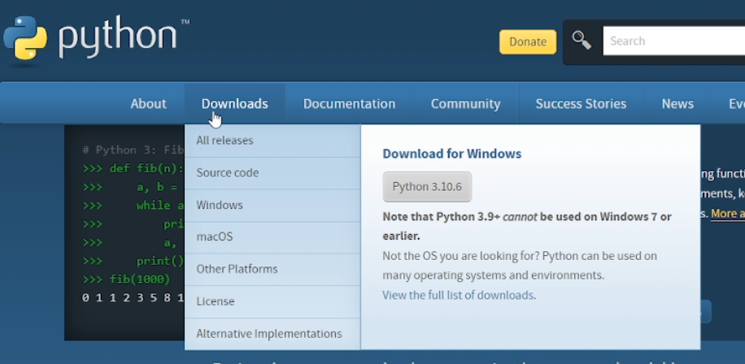
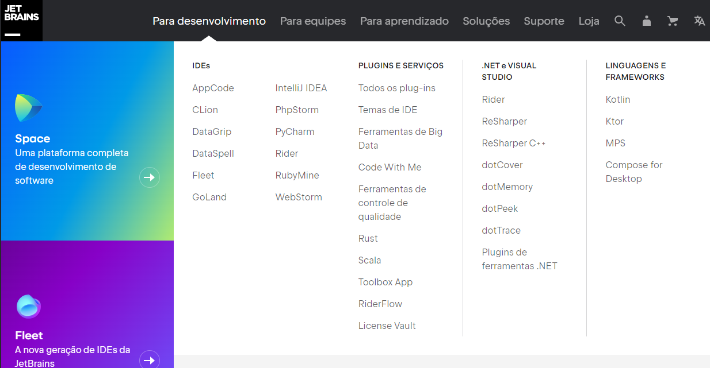
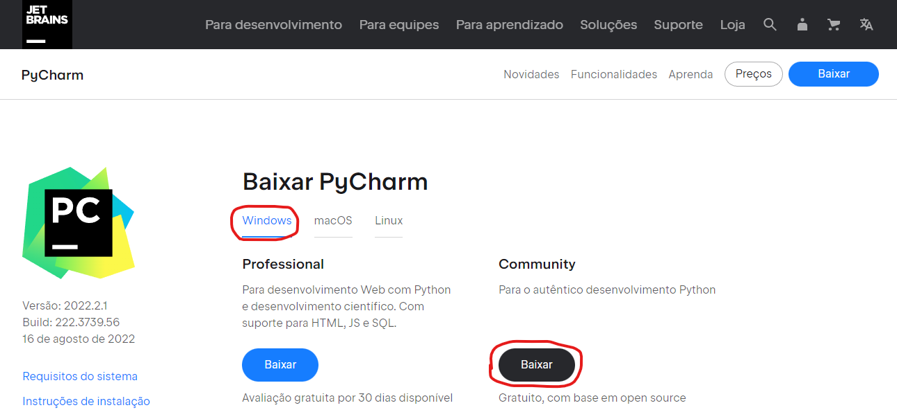

O que é Python?
O Python foi lançado no início da década de 90 pelo programador e matemático holandês Guido Van Rossum. A linguagem foi projetada para dar ênfase no trabalho do desenvolvedor, facilitando a escrita de um código limpo, simples e legível, tanto em aplicações menores quanto em programas mais complexos.
Para que serve?
O primeiro, e talvez o uso mais falado de Python atualmente – é em data science. Data science é a prática de extrair informação e Insights através de dados. Nesse caso, data science inclui o machine learning, visualização de dados e análise de dados.
Estruturas básicas:
No Python, podemos utilizar diversos tipos de estruturas de dados. Estas estruturas resolvem um tipo de problema e podem ser úteis em diversas situações. As principais estruturas são as Listas, Sets, Dicionários e Tuplas.
Listas: Uma lista é a estrutura de dados mais básica do Python e armazena os dados em sequência, onde cada elemento possui sua posição na lista, denominada de índice. O primeiro elemento é sempre o índice zero e a cada elemento inserido na lista esse valor é incrementado. No Python, uma lista pode armazenar qualquer tipo de dado primitivo (string, inteiro, float, etc). Para a criação de uma lista no Python, a sintaxe é a seguinte:
nome_da_lista = [] # Criação de uma lista vazia
nome_da_lista = [1, 2, 3] # Criação de uma lista de inteiros
nome_da_lista = [1, "Olá, mundo!", 1.1] # Criação de uma lista com vários tipos diferentes
Podemos também criar listas dentro de outras listas. Essas são chamadas de nested lists e sua sintaxe é a seguinte:
nome_da_lista = ["Olá, mundo", [1, 2, 3], ["outra_lista"]]
Tuplas: Uma tupla é uma estrutura bastante similar a uma lista, com apenas uma diferença: os elementos inseridos em uma tupla não podem ser alterados, diferente de uma lista onde podem ser alterados livremente. Sendo assim, em um primeiro momento, podemos pensar em uma tupla como uma lista que não pode ser alterada, mas não é bem assim… É certo que as tuplas possuem diversas características das listas, porém os usos são distintos. As listas são destinadas a serem sequências homogêneas, enquanto que as Tuplas são estruturas de dados heterogêneas. Sendo assim, apesar de bastante similares, a tupla é utilizada para armazenar dados de tipos diferentes, enquanto que a lista é para dados do mesmo tipo. A sintaxe para criação de uma tupla, assim como uma lista, também é bem simples. Ao invés de se utilizar colchetes (listas), são utilizados parênteses, como podemos ver abaixo:
nome_da_tupla = (1, 2, 3) #tupla de inteiros
nome_da_tupla = (1, "olá", 1.5) #tupla heterogênea
Sets: No Python, os sets são uma coleção de itens desordenada, parcialmente imutável e que não podem conter elementos duplicados. Por ser parcialmente imutável, os sets possuem permissão de adição e remoção de elementos. Além disso, os sets são utilizados, normalmente, com operações matemáticas de união, interseção e diferença simétrica, conforme veremos nos próximos tópicos. Para a criação de um set no Python há duas formas: A primeira é bem similar às listas e tuplas, porém utilizando chaves {} para determinar os elementos do set:
nome_do_set = {1, 2, 3, 4}
A segunda é utilizando o método set presente no Python:
nome_do_set = set([1, 2, 3, 4])
Dicionários: No Python, os dicionários são coleções de itens desordenados com uma diferença bem grande quando comparados às outras coleções (lists, sets, tuples, etc): um elemento dentro de um dicionário possui uma chave atrelada a ele, uma espécie de identificador. Sendo assim, é muito utilizado quando queremos armazenar dados de forma organizada e que possuem identificação única (como acontece em bancos de dados). Existem duas formas de se criar um dicionário utilizando o Python. A primeira delas é utilizando chaves ( {} ) e separando os elementos das chaves com dois pontos ( : ) e os outros elementos por vírgula ( , ):
nome_do_dicionario = {1: ‘João’, 2: ‘José’}
nome_do_dicionario = {‘nome’: ‘João’, ‘sobrenome’: ‘Silva’}
A segunda forma é utilizando o método dict() com o dicionário sendo passado como parâmetro:
nome_do_dicionario = dict({1: ‘João’, 2: ‘José’})
nome_do_dicionario = dict({‘nome’: ‘João’, ‘sobrenome’: ‘Silva’})
Como Instalar o Python
1- Abrir o site https://www.python.org no seu navegador e colocar o mouse sobre o botão “download”

2- Clicar em “Windows”;
3- Selecionar a versão do python desejada (mais recente recomendada);
4- Descer até encontrar o titulo “Files” e clicar em “Windows Installer” + 32/64 bits (de acordo com o seu sistema operacional)
5- Salvar o arquivo na sua máquina após o download.
6- Executar o instalador;
7- Marcar a caixa “ADD Python to PATH”
Como instalar o Pycharm
1- Abrir o site https://www.jetbrains.com no seu navegador;
2- Clicar em “para Desenvolvimento”;

3- Clicar em “PyCharm”;
4- Clicar no botão “baixar”:
5- Selecionar “Windows” e clicar em “baixar” a versão Community

6- Após fazer o download do arquivo, abri-lo;
7- Next, escolher o path de onde será instalado o pycharm - next- next – install;